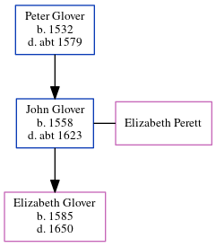

John Glover 1558 - c1623
[ Home ] | [ Calendar ] | [ Surnames Index ] | [ Census Index ] | [ Family History ]The child of Peter Glover, John Glover, the 11 times great-grandfather of Nigel Horne, was born in Goodnestone, Kent, England in 1558 and married Elizabeth Perett (with whom he had 1 child, Elizabeth) in Nonington, Kent, England on Oct 16, 15801.
He died c. 1623 in Goodnestone and was buried there at Holy Cross on Feb 12, 1623.
Parents
- Peter was born in 1532
Children
- Elizabeth was born in 1585
Citations
- Kent, East Kent marriage index 1538-1754 - Findmypast
Media
Canterbury Burials Transcription - GBPRS-CANT-D-95227895
Kent, East Kent marriage index 1538-1754 Transcription - GBPRS-EASTKENT-MAR-075345-1
Family Tree
Generated by ged2site. Last updated on Jun 11, 2024